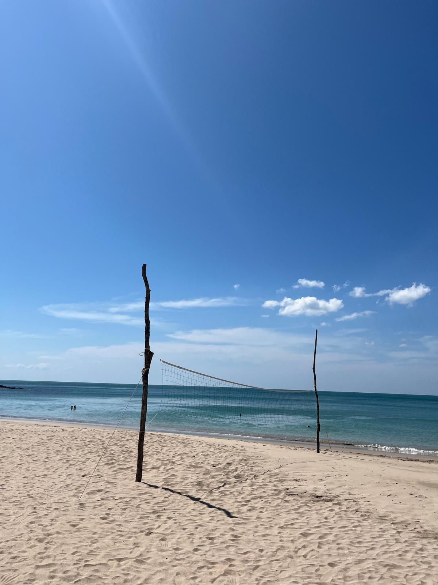
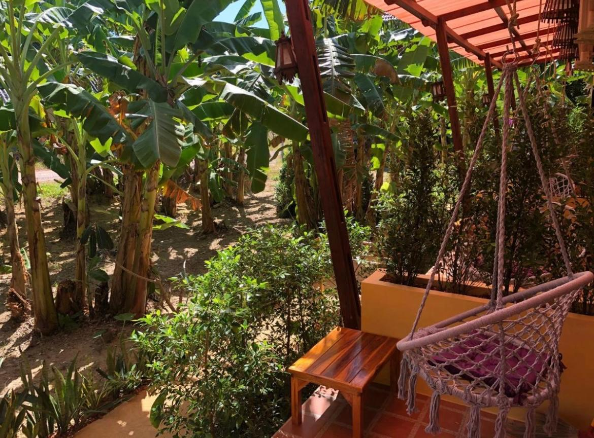

×

Koh Lanta Adası'nı Keşfedin
Kalabalıklardan uzak, doğayla iç içe bir Tayland deneyimi sunan Koh Lanta, sade güzelliği ve huzur dolu atmosferiyle ruhunuzu dinlendireceğiniz bir ada.
Koh Lanta Seyahat Rehberi
Koh Lanta, Tayland’ın güneyinde, Andaman Denizi’nde yer alan ve Krabi bölgesine bağlı sakin bir adadır. Adalar topluluğu şeklinde olup en büyük ada Koh Lanta Yai’dir; ziyaretçilerin çoğu burayı tercih eder. Phuket ve Phi Phi Adaları’na kıyasla çok daha az kalabalık ve turistik bir atmosfere sahip olması, huzurlu bir tatil arayanlar için burayı ideal kılar. Ada, geniş kumsallar, tropik ormanlar ve sessiz koylarla çevrili olup, doğayla iç içe bir kaçış ve dinginlik noktasıdır. Halk, balıkçılık, tarım ve turizme dayalı sade bir yaşam sürerken, yerel kültür ve gelenekler hala güçlü bir şekilde korunur. Koh Lanta, sadece bir tatil noktası değil, aynı zamanda doğa, huzur ve yavaş yaşam deneyimi arayanlar için harika bir adadır.
Para Birimi ve Fiyatlar
Tayland’ın resmi para birimi Baht (THB)’dir ve çoğu yerde nakit veya kredi
kartıyla
ödeme yapılabilir.
Bankamatiklerden kendi bankanızın kartıyla para çekmek de mümkün; fakat çektiğiniz miktara
bağlı olarak komisyon oranları artabilir. Bu nedenle yüksek miktarlar yerine, ihtiyacınız kadarını
çekmek hem güvenli hem de daha ekonomik olacaktır.
2025 itibarıyla ortalama kurlar yaklaşık olarak:
1 Tayland Baht ≈ 1,29 TL (yaklaşık değer)
1 USD ≈ 33-36 THB civarındadır.
Koh Lanta, Tayland’ın diğer turistik bölgelerine göre daha uygun fiyatlı bir
adadır;
burada yemekler, konaklama ve günlük harcamalar genellikle daha ekonomiktir. Özellikle plaj
kenarındaki restoranlar ve küçük kafelerde, hem lezzetli hem de hesaplı seçenekler bulmak oldukça
kolaydır.
Koh Lanta'ya Ne Zaman Gidilir?
Koh Lanta, tropikal iklimin hakim olduğu bir ada olduğundan yıl boyunca sıcak ve nemli bir havaya
sahiptir. Ancak ziyaret için en ideal dönem, kasım–nisan ayları arasındaki kuru
sezondur. Bu
dönemde deniz sakin, hava güneşli ve yağış oldukça azdır; plajlar ve doğa yürüyüşleri için
mükemmeldir.
Mayıs–Ekim ayları ise yağışlı sezon olarak kabul edilir. Bu aylarda kısa süreli
tropik yağmurlar
görülebilir ve deniz biraz dalgalı olabilir. Bu dönemde ada daha sessizdir, konaklama fiyatları
düşer ve kalabalık azdır; sakinlik ve doğa deneyimi açısından tercih edilebilir.
Kısaca, Koh Lanta’ya seyahat ederken havayı ve deniz koşullarını göz önünde
bulundurmak, tatilinizi
daha keyifli hale getirir.
Koh Lanta'da Yeme - İçme
Koh Lanta’da yeme-içme, adanın sakin ve otantik atmosferi kadar keyifli. Sabahları erkenden açılan
yerlilerin dükkanları, taze meyve seçenekleriyle dolu; hindistancevizi, mango, papaya,
ananas, passion fruit gibi tropik
lezzetleri doğrudan tezgahlardan bulabilirsiniz. Dilerseniz karışık büyük bir bardak meyve suyu da
isteyebilirisniz, seçtiğiniz meyvelerden.
Plaj kenarındaki küçük restoranlar ve sokak
tezgahlarında deniz ürünleri uygun fiyatlarladadır. Ada,
Phuket veya Phi Phi Adaları gibi popüler turistik bölgelere
kıyasla daha ucuz; hem lezzetli hem de
ekonomik seçenekler bulmak mümkün. Koh Lanta, hem fiyat hem de huzurlu ortam
açısından yeme-içme
deneyimini gerçekten muhteşem kılıyor.
Adaya Ulaşım
Koh Lanta’ya ulaşım genellikle Krabi Havalimanı veya Phuket
Havalimanı üzerinden sağlanıyor. Bangkok
veya diğer büyük şehirlerden bu havalimanlarına uçakla ulaşabilirsiniz. Havalimanından adaya gitmek
için birkaç seçenek mevcut:
-Feribot ve Transfer: Krabi veya Phuket’ten feribotla adaya geçiş mümkündür.
Feribotlar genellikle
sabah ve öğleden sonra hareket eder, yolculuk süresi yaklaşık 1-2 saattir. Çoğu tur şirketi otelden
feribot terminaline transfer hizmeti de sunar.
-Özel Araç veya Minibüs: Havalimanından doğrudan Koh Lanta’ya özel araç veya
paylaşımlı minibüs ile
ulaşmak da mümkündür. Bu seçenek feribot ve kara yolunu birleştirir ve daha hızlıdır.
- Biz bu
şekilde adaya ulaştık-
Ek olarak; Koh Lanta’da toplu taşıma sınırlı olduğundan, ada içinde en yaygın
ulaşım yöntemleri motor kiralama
veya bisiklet kullanmaktır. Taksi ve tuk-tuk da mevcut olsa da, ücretleri diğer bölgelere göre biraz
daha yüksek olabiliyor.
Koh Lanta'da Nerede Kalınır?
Koh Lanta’da konaklama seçenekleri oldukça çeşitli. Deniz, kum ve güneş keyfi istiyorsanız sahil
şeridindeki oteller ve bungalovlar ideal, daha otantik bir deneyim arıyorsanız Old Town
civarındaki konaklamaları tercih edebilirsiniz. Ada genelinde her bölge konaklama için
uygundur ve
fiyatlar diğer turistik bölgelere göre daha ekonomiktir.
Seyahatinizi Planlayın(Kullanışlı Bağlantılar)
Seyahatlerimizi planlarken kullandığımız araçlara göz atın.
Burada yer alan bağlantılar bağlı kuruluş (affiliate) linkleridir.
Bu linkleri kullanarak blogumuzu sürdürmemize yardımcı oluyorsunuz.
Sizin için herhangi bir ek maliyet oluşturmaz, ancak bizim misyonumuzda büyük fark yaratabilir.
🌿
🏨Size en uygun oteli bulun. Rezervasyonlarınızı Booking.com üzerinden yapabilirsiniz.
✈️En uygun uçuş fiyatlarını Skyscanner.com adresinden bulabilirsiniz.
🎟️Çevrim içi tur ve etkinlik rezervasyonları için GetYourGuide.com kullanın.
🏕️Yürüyüş, kamp, bisiklet ve daha fazlası için Decathlon.com geniş bir yelpaze sunuyor.
Koh Lanta Gezi Haritası
Koh Lanta’nın Plajları
Koh Lanta, adanın sakin ve huzurlu atmosferini en iyi şekilde yansıtan plajlara sahip. Geniş
kumsalları, turkuaz suları ve yemyeşil palmiye ağaçlarıyla adeta tropik bir cennet. Nerede
olursanız olun, hemen denize girebileceğiniz sakin
koylar bulmanız kolay; ancak en meşhur plajlar arasında Long Beach (Phra Ae Beach),
Kantiang Bay ve
Nui
Bay öne çıkıyor. Ada genelinde maymunlar sıkça görülüyor ve bazı plajlarda minik
sürprizlerle
karşılaşmak
mümkün.
Burada ne kıyıya yanaşan tekneler var ne de gürültü yapan jetskiler; denizdeyken sizi rahatsız
edecek hiçbir şey yok, sadece dalgaların sesi ve doğanın huzuru eşlik ediyor.
Sabah erken saatlerde güneşin doğuşunu izleyip denize girmek ayrı bir keyif, akşamları ise her gün
ayrı
bir görsel şölenle güneş batıyor; gökyüzü turuncu, pembe ve mor tonlarına boyanırken, sahilde oturup
manzarayı izlemek gerçekten harika.
Biz Koh Lanta’da daha çok doğayla iç içe, sakin ve kalabalıktan uzak plajları tercih ettik. Şimdi
size bu huzurlu köşelerden birkaçından bahsedeceğiz; siz de kendi tatil tarzınıza göre planınızı
kolayca yapabilirsiniz.
Klong Jark Plajı (Klong Jark Beach)
Koh Lanta’daki en huzurlu köşelerden biri olan Klong Jark Beach, sabahın erken saatlerinden akşamın son ışıklarına kadar denizin ve güneşin tadını doyasıya çıkarabileceğiniz sakin bir plaj. Deniz tertemiz, tamamen kum ve genellikle oldukça durgun. Yüzmek ve dinlenmek için mükemmel bir yer.
Plajın sol
tarafında yer alan Kung-Fu Bar, hem keyifli atmosferi hem de lezzetli yemek ve
kokteylleriyle
kesinlikle uğranması gereken bir durak. Önünde bir beach voleybol alanı
bulunuyor;
dilerseniz
oynayan gruplara katılabilir ya da kendi takımınızı kurabilirsiniz. Ayrıca burada bara ait
kanoları da kullanabiliyorsunuz. Biz kano aşığı olduğumuz için durgun denizde
saatlerce kürek çektik.
Aman dikkat! Tayland güneşi nasıl yandığınızı fark ettirmeden
kavurabiliyor, bu yüzden güneş kremi
kullanmayı unutmayın.
Plajın sağ tarafında ise sabahın erken saatlerinden itibaren açık olan U-Bay Kafe yer alıyor. Güne başlarken taze meyvelerden hazırladıkları içecekleri mutlaka denemelisiniz; hem ferahlatıcı hem de güne enerjik bir başlangıç yapmanızı sağlıyor.
Nui Koyu (Nui Bay)
Nui Bay, Koh Lanta’nın en sakin ve doğal plajlarından biri. Tuk-tuk veya taksiden
indikten ya da
motorunuzu yol kenarına park ettikten sonra (ada içinde araba kiralama yok; yollar
genellikle tek şeritli olduğu için sadece motor bırakılacak boşluklar bulunuyor) yeşilliğin içinden
patika bir yoldan inmeye başlıyorsunuz. Her adımda tepeden bu
muhteşem koya yaklaştıkça manzara biraz daha güzelleşiyor.
Burası küçük, sessiz ve doğayla baş başa kalabileceğiniz bir koy. Herkes kendi halinde; kalabalık,
gürültü ya da karmaşa yok. Plajda herhangi bir tesis bulunmuyor, sadece küçük bir barakadan oluşan
basit bir satış noktası var. Burada buz gibi içecekler, hafif atıştırmalıklar ve tabii ki Tayland’ın
vazgeçilmezi taze hindistancevizi suyu bulabilirsiniz. Deniz tamamen kum, masmavi
ve günün her saati
çarşaf gibi sakin.
O kadar doğanın içinde ve huzurlu bir yer ki, Nui Bay’e inerken patika yol boyunca birçok maymunla
karşılaşabiliyorsunuz. Önünüzden ve arkanızdan geçerek kendi rutinlerine devam ediyorlar; kimisi
durup manzarayı izliyor, kimisi annesinin koynunda keyif yapıyor, kimisi de dallardan seni
gözlemliyor.
Doğanın bu kadar içinde olmanın en güzel yanı da bu aslında. Her an bir sürprizle
karşılaşabiliyorsunuz;
plaja inip eşyaları karıştırmak ya da insanların denize girerken eşyaları birbirine emanet etmesi
gibi küçük
olaylar da eksik olmuyor. Sebebi mi? Tabii ki bizim küçük canavarlar!😄
Nui Bay, Koh Lanta’nın doğallığını en saf haliyle yaşamak isteyenler için adeta gizli bir cennet. Sessizliği, sakinliği ve doğallığıyla adanın en huzurlu duraklarından biri.
Koh Lanta Old Town
Koh Lanta’nın doğu kıyısında yer alan Old Town, adanın tarihini ve yerel kültürünü
yansıtan bölgedir. Bir zamanlar balıkçılar, deniz tüccarları ve göçmen Çinli topluluklar için önemli
bir liman olan bu bölge, bugün hala eski ahşap evleri, deniz üzerine uzanan iskeleleri ve nostaljik
atmosferiyle karşımızda.
Koh Lanta Old Town, deniz kenarında sıralanan dükkanlar ve restoranlarla dolu tek
bir
ana caddeden oluşuyor. Bazı restoranlar iskelelerin üzerine kadar uzanıyor, böylece günün her
saatinde deniz manzarasına karşı keyifli bir yemek yiyebiliyorsunuz.
Koh Lanta Old Town her ne kadar postanesiyle, küçük marketleriyle ve ihtiyacınız olabilecek her
şeyle tipik bir Tay kasabası gibi görünse de, hala köy havasını da koruyor. Arka
sokaklarda
kurutulan balıkları, birkaç adım ötede gizlenen büyük bir tapınağı, ahşap oymacılığı yapan ya da
yemek pişiren yerel halkı görebiliyorsunuz.
Size tavsiyemiz, hiçbir plan yapmadan sokaklarda dolaşın ve bu atmosferi içinize çekin. Belki
elinizde
taze bir hindistancevizi suyu olur, belki de tatlı isteğinizi bastırmak
için lezzetli bir mango ve
sticky rice (Tayland'a özgü çok enfes bir şey) denersiniz. İkisi de burada bolca
bulunuyor.
Doğa ve Mu Koh Lanta Milli Parkı
Koh Lanta Milli Park, adanın en güney ucunda yer alıyor ve Koh Lanta’nın doğal
güzelliklerini en
saf haliyle görebileceğiniz yerlerden biri. 1990 yılında koruma altına alınan bu park, hem karasal
hem de deniz ekosistemlerini kapsıyor. Yani hem ormanlar hem de çevresindeki adalar milli park
sınırlarına dahil.
Yürüyüş parkuru, yaklaşık 1.5-2 kilometre uzunluğunda ve tamamlanması
ortalama 30-45 dakika sürüyor. Parkurun başlangıcı girişin hemen yakınından
başlıyor ve tropik ormanın içinden geçerek yeniden sahile ulaşıyor. Parkur, karmaşık
değil; ince bir patika şeklinde, başlangıcından sonuna kadar rahatça
ilerleyebiliyorsunuz. Giriş ücreti kişi başı 150
Baht.
Rota boyunca kuş sesleri, maymunlar ve zaman zaman ağaçların arasından görünen deniz manzaraları eşlik ediyor. Ancak yürüyüş biraz dik yokuşlu ve nemli olabiliyor, bu yüzden rahat ayakkabılar giymek ve su bulundurmak önemli.
Ayrıca parkurda ve sahil kenarında maymunlar sıkça görülüyor. Yiyeceklerinizi açıkta bırakmamaya dikkat etmekte fayda var! 😄
Parkurun sonunda deniz fenerine (lighthouse) çıktığınızda göreceğiniz manzara,
adanın en etkileyici
noktalarından biri. Buradan hem Andaman Denizi’nin hem de çevredeki küçük adaların
panoramik
görüntüsünü izleyebiliyorsunuz.
Ve bir de sizi çok sessiz ve sakin bir plaj karşılıyor. Yürüyüşün verdiği harareti
atmak için
masmavi denize kendinizi bırakabilirsiniz. Çoğunlukla plajda kimse yüzmüyor, bu yüzden bu huzurlu
fırsatı kesinlikle kaçırmayın. Ayrıca yüksek bir ağaca bağlı salıncakta sallanarak manzaranın tadını
çıkarmayı da unutmayın. Tam anlamıyla dinlenmek ve doğayla baş başa kalmak için ideal bir nokta.
Yeme - İçme Tavsiyeleri
1.Tuesday Morning / Small Talk Cafe & Chill Out
Deniz manzaralı oturma düzeniyle harika bir atmosfere sahip bir mekan burası. Bazı masalarda
sandalyelerde, bazılarında ise minderlerin üzerinde rahatça oturabiliyorsunuz. Ortam son derece
doğal, sessiz ve huzurlu. Menüde kahvaltı tabakları,
smoothie’ler, kahve çeşitleri, sandviçler, fruit bowl'lar ve pancake gibi kafe
klasiklerinden oluşan zengin bir seçenek var.
Biz özellikle kahvaltı tabaklarına ve fruit bowl’lara
bayıldık; hem sunumları hem de detaylara verilen özen gerçekten çok güzel. Fiyatlar adadaki bazı
yerlere göre biraz daha pahalı olsa da, manzara, kalite ve hizmet düşünüldüğünde
fazlasıyla hak ediyor.
Eğer Koh Lanta’ya geldiyseniz, burada bir kahvaltı yapmadan ya da manzaraya karşı biraz vakit
geçirmeden kesinlikle dönmeyin. Adanın huzurunu en güzel hissedebileceğiniz yerlerden biri burası.
2.Galapagos Cozy and Healthy
Koh Lanta’da mutlaka uğramanız gereken, adeta gizli bir vaha gibi bir yer.
Taptaze ve sağlıklı kahvaltı seçenekleri, kahveleri, meyve suları, tatlıları ve tropikal kaseleriyle
güne
harika bir başlangıç yapabilirsiniz. Ortam şahane.
Mekan, yeşillerin içinde sessiz, sakin, huzur dolu bir yer. Çok kalabalık olma şansı da yok çünkü
çok az masası var.
Koh Lanta'da burayı kesinlikle bulun ve gidin.
3.Pinto Restoran, Old Town
Denizin üzerinde, iskeleye kurulmuş harika bir bölümü var. Dilerseniz içerideki açık ve ferah masalarda da oturabilirsiniz, ancak deniz üzerindeki kısım gerçekten harika. Dekorasyon ve ortam detaylarına özen gösterilmiş; hem sade hem de sıcak bir ambiyans hakim.
Menü oldukça geniş. Tay mutfağı lezzetlerinin yanı sıra Asya ve uluslararası seçenekler de bulunuyor.
Vejetaryen ve vegan birçok alternatif mevcut. Özellikle taze deniz
ürünleri ve klasik Tayland yemeklerinden Pad Thai kesinlikle denemeye değer.
Ardından Tayland’ın
meşhur tatlısı mango sticky rice ile yemeğinizi tatlı bir şekilde
sonlandırabilirsiniz.
Bizden tavsiye: Güneşin batışına ya da denizin karanlık manzarasına karşı burada
harika bir
akşam yemeği deneyimi yaşayın.
Konaklama Deneyimi
Koh Lanta’da konaklama için tercihimiz One World Bungalows oldu ve gerçekten çok memnun kaldık. Burası yan yana sıralanmış bungalov odalardan oluşuyor; her birinin kendine ait küçük bir verandası var ve verandalar muz ağaçlarına açılıyor. Ortam inanılmaz sessiz, sakin ve huzurlu. Temizlik konusunda da tam not alıyor. Özellikle banyosu bizi çok etkiledi. Banyo adeta ayrı bir oda gibiydi; açık hava hissi veren, yeşilliklerle çevrili bir şekilde dekore edilmişti. Sanki doğanın içinde duş alıyormuşsunuz gibi bir atmosfer yaratılmış.


Odaların içinde mutfak bulunmuyor, ancak çay, kahve ve su alabileceğiniz küçük bir alan mevcut.
Mekanın sahibi bize çok yardımcı oldu; kaldığımız süre boyunca bize uygun fiyata motor kiraladı ve
tüm süreç oldukça kolay, rahat ve sorunsuz geçti.
Konumu da oldukça merkeziydi, bu sayede adayı gezmek bizim için çok pratik oldu. Dört gece için
toplam 4500 Baht ödedik.
Tabii ki bir otel konforu beklememek gerekiyor; burası daha çok minimal, sade ama her detayı
düşünülmüş bir konaklama alanı. Bizim için fazlasıyla yeterliydi ve doğayla iç içe, bahçeye adım
atar atmaz dalından muz koparmalı bir
tatil arayanlar için kesinlikle doğru bir tercih.
Burası ve daha fazla konaklama seçeneği için: booking.com ↗
Adaya Ulaşım - Adada Ulaşım
Biz öncelikle Phuket’ten otobüsle Krabi Havalimanı’na geçtik. Yaklaşık 3.5–4 saat süren yolculuk için kişi başı 350 Baht ödedik. Otobüs yolculuğu boyunca yolları ve doğayı izlemek keyifliydi. Üstelik otobüsümüz de oldukça afilliydi! 😄
Krabi Havalimanı’ndan ise Koh Lanta’daki konaklama yerimize özel araç transferiyle
geçtik. Yaklaşık 2
saat süren bu yolculuk için araç başı 1600 Baht ödedik (ücrete feribot
geçişi de dahildi).
Daha önce de belirttiğimiz gibi, Krabi Havalimanı’ndan paylaşımlı minibüslerle de adaya ulaşmak
mümkün. Yaklaşık 2.5–4 saat süren bu yolculuk için kişi başı 350 Baht ödeniyor. Ancak saatlere
dikkat etmekte fayda var, çünkü genellikle sabah erken saatlerde veya öğleden önce hareket
ediyorlar.
Bizim için otobüs + özel araç kombinasyonu oldukça rahat ve keyifliydi. İstediğimiz saatte yola
çıkıp planımızı esnek bir şekilde organize edebildik.
Aslında Phuket'ten doğrudan feribotla Koh Lanta’ya geçmek de mümkündü, ancak sefer saatleri
planımıza uymadığı
için tercih etmedik. Feribot yolculuğu yaklaşık 2.5–3 saat sürüyor ve kişi başı 1800–1900 Baht
civarında.
Ada içi ulaşımda ise biz 4 gün boyunca motor kullandık. Yollar motor kullanımı için
oldukça elverişli ve
keyifli. Hatta motor konusunda çekinceleriniz varsa bile, Koh Lanta bu konuda
kendinizi rahatça
geliştirebileceğiniz bir ada. Trafik son derece sakin, herkes birbirine saygılı ve yollar genellikle
boş.
Motorun deposunu benzin istasyonlarında kendiniz para atarak dolduruyorsunuz.
İnanın bu küçük detay bile
oldukça eğlenceli!
Motor dışında tuk-tuk ve taksiler de ada içinde ulaşım için
kullanılabiliyor. Tuk-tuklar rengarenk,
arkası açık ve adayı gezerken size keyifli bir tropik atmosfer sunuyor. Gözlemlerimize göre
tuk-tukla ada turu yapmak da en az motorla gezmek kadar eğlenceli bir deneyim.
Keşfet, Dinlen, Aşık Ol: Koh Lanta
Koh Lanta, sakinliği, yemyeşil doğası, plajları ve huzurlu atmosferiyle Tayland’ın en özel
adalarından biri. Burası sadece deniz, kum ve güneş sunmakla kalmıyor; yemyeşil ormanları, sakin
koyları ve sevimli yerel yerleriyle adeta ruhunuzu dinlendiriyor.
Koh Lanta aşık olmamak neredeyse imkansız. Burada herkes için yapılacak bir şey mutlaka var. Yalnız
seyahat ediyor olun, bir çift olarak ya da ailenizle birlikte, aradığınız her şeyi Koh Lanta’da
bulacağınıza emin olabilirsiniz.
Peki, senin Koh Lanta’daki en sevdiğin yer hangisi ve neden? Aşağıya yorum bırakın, biz de duymak isteriz!
Yorum Yaz
E-posta adresiniz yayımlanmayacaktır. Gerekli alanlar * ile işaretlenmiştir.